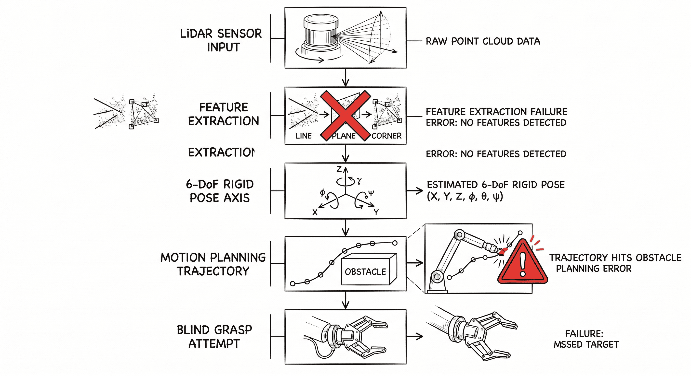
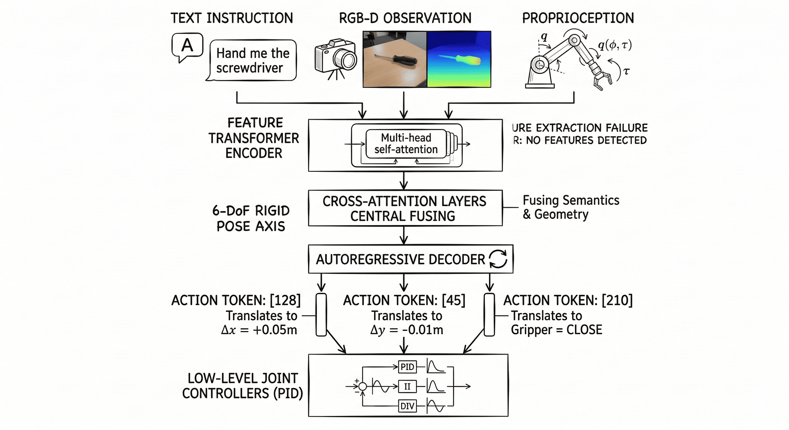
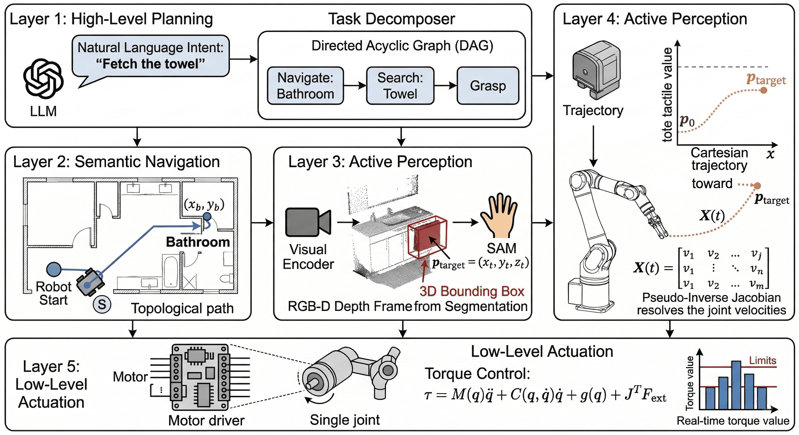
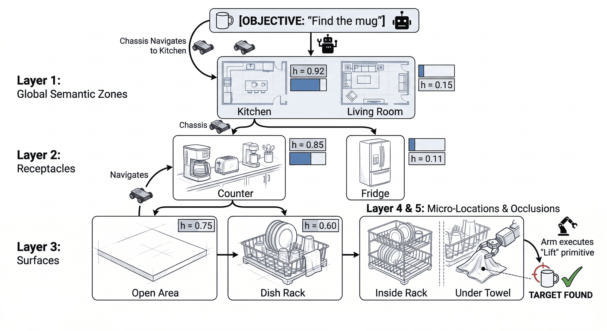
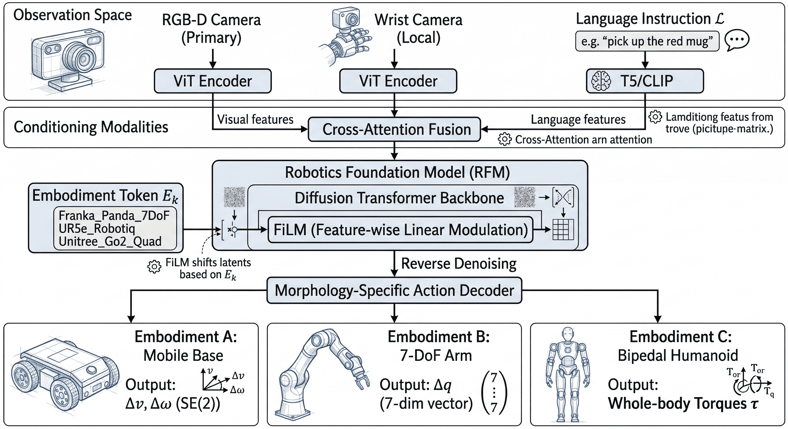
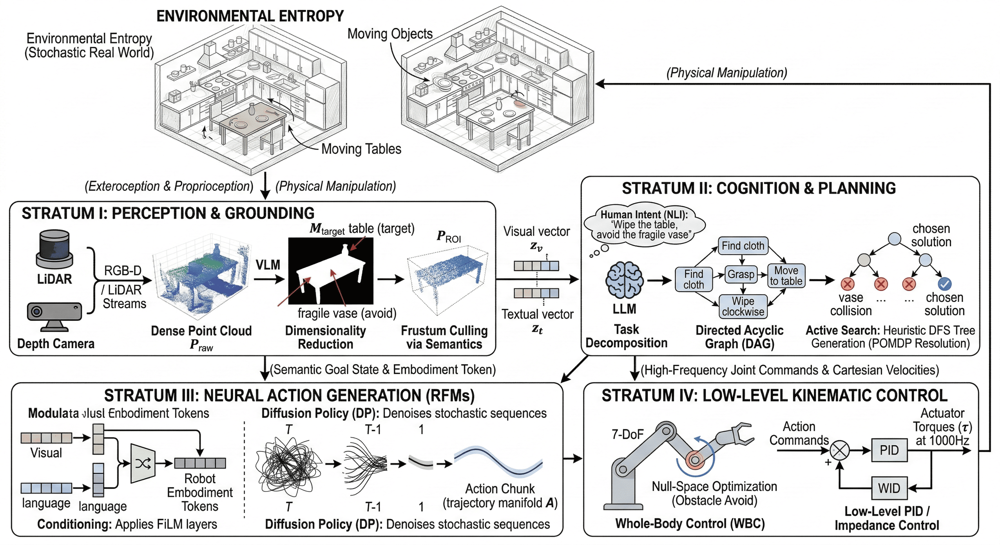

🤖 1. The Systemic Bottlenecks of Traditional Robotic Manipulators and the Dawn of Embodied AI
The realization of Industry 4.0 paradigms has historically relied on the deployment of synchronized robotic manipulators within highly structured, deterministic environments. While this deterministic automation has exponentially increased throughput, it is entirely dependent on environmental predictability. As robotic applications extend beyond structured factory floors into high-entropy, stochastic domains—such as healthcare facilities, dynamic logistics hubs, and domestic spaces—the systemic limitations of classical robotics become mathematically and operationally pronounced. To engineer the next generation of autonomous systems, an analytical deconstruction of traditional robotic failure modes is required.
The Mobile Manipulator: Kinematic Versatility Constrained by Deterministic Frameworks
A Mobile Manipulator (MM) represents a cyber-physical system integrating the planar or spatial mobility of an autonomous mobile robot (AMR) with the dexterity of a multi-degree-of-freedom (DoF) serial manipulator. Mathematically, the configuration space (\(C_{space}\)) of an MM is the Cartesian product of the base pose and the manipulator joint space, typically defined as \(SE(2) \times \mathbb{R}^n\) or \(SE(3) \times \mathbb{R}^n\).
While this theoretically grants infinite workspace capability and kinematic redundancy—allowing the system to optimize secondary objectives such as manipulability maximization—the operational taxonomy is traditionally restricted to the "3Ds" (Dull, Dirty, and Dangerous).
| Macro-Category | Specific Sub-Tasks | Kinematic/Perception Requirement | Environmental Entropy |
|---|---|---|---|
| Assistive & Logistics | Machine tending, Part feeding (Multi-item), Transportation | High payload, \(SE(2)\) navigation + End-effector positioning | Low to Medium (Structured aisles, fixed stations) |
| Service & Maintenance | Cleaning, Inspection, MRO (Maintenance, Repair, Overhaul) | Continuous trajectory tracking, force-torque sensing | Medium (Static obstacles, predictable changes) |
| Assembly | Process execution, Pre-assembly, Part feeding (Single-item) | Sub-millimeter repeatability, Impedance control | Low (Jigs, fixtures, fixed reference frames) |
Table 1: Operational Taxonomy of Traditional Mobile Manipulators
Despite this theoretical versatility, traditional mobile manipulators are severely limited by a fatal architectural flaw: they are semantically blind.
The Perception Gap: Geometric Mapping vs. Semantic Affordance
Traditional robotic architectures perceive their surroundings exclusively through geometric abstractions and coordinate transformations (e.g., SLAM-generated point clouds, OctoMaps). The world is parsed as a binary state of free space (\(Q_{free}\)) and occupied space (\(Q_{obs}\)).
The Hardcore Technical Formulation:
In classical motion planning, task execution is framed as a deterministic optimization problem constrained by kinematics and collision boundaries. The control policy \(\pi\) maps a fully observable geometric state \(s_t\) to an action \(a_t\):
To execute a grasp or manipulation, the system relies on algorithms like RRT* (Rapidly-exploring Random Tree) or CHOMP to find a trajectory \(q(t)\) that minimizes a predefined cost function \(C(q, \dot{q}, \ddot{q})\)—usually representing energy, time, or jerk:
Where \(U_{rep}\) is the artificial repulsive potential field generated by geometric obstacles.
The Semantic Deficit:
This mathematical framework is devoid of semantic affordance. To a classical planner, a "chair" is merely an arbitrary polygon mesh at Cartesian coordinate \((x, y, z)\). The algorithm cannot compute the object's utility, fragility, or relational context. If a task requires grasping a delicate wine glass versus a steel cylinder, pure geometric planning fails to modulate impedance parameters or grasp taxonomy without explicit human-coded rules.
The Brittleness of Hardcoded Execution (POMDP Failures)
Because they lack semantic grounding, traditional robotic systems are governed by rigid state-machine logic. This creates profound bottlenecks when exposed to the Partial Observability and stochasticity of the real world, formally modeled as a Partially Observable Markov Decision Process (POMDP).

Figure 1: Traditional Sense-Plan-Act (SPA) Pipeline Failure
This rigid architecture results in:
- High Integration Overhead: Operating these machines requires roboticists fluent in ROS/ROS2, Jacobian matrix inversions, and PID/Impedance tuning. The human-to-machine interface is syntactical (code) rather than semantic (language).
- Zero Zero-Shot Adaptability: Real-world environments possess high entropy. If an object is displaced by a few centimeters, the pre-computed \(q^*\) trajectory becomes instantly invalid. The system lacks the internal cognitive mechanism to dynamically re-plan based on contextual goal-oriented reasoning.
The Paradigm Shift: Spatial Intelligence and Embodied AI
To surpass the limitations of deterministic control, the field is undergoing a paradigm shift from rigid automation to true "autonomy." This represents the convergence of the third wave of Artificial Intelligence—underpinned by deep Transformer architectures—with physical actuation: Embodied AI.
Pioneered by researchers such as Fei-Fei Li, the frontier is now defined by Spatial Intelligence: the capability of an artificial neural network not merely to classify 2D pixel arrays, but to infer 3D topology, deduce physics, and generate long-horizon multi-step manipulation plans autonomously.
Vision-Language-Action (VLA) Architecture
Embodied AI deprecates the traditional modular pipeline in favor of end-to-end Vision-Language-Action (VLA) models (e.g., RT-X, PaLM-E). By tokenizing both continuous sensorimotor streams and language, the robot acquires a unified "nervous system."
The deterministic policy \(\pi(s_t)\) is replaced by an autoregressive probabilistic model parameterized by deep neural networks \(\theta\):
Where:
- \(a_t\) represents the action tokens (e.g., end-effector \(\Delta x, \Delta y, \Delta z\), gripper state).
- \(I_{0:t}\) represents the visual history (images/point clouds).
- \(L\) represents the natural language instruction (e.g., "Set the table").
Traditional Robotics (Industry 4.0)
- State RepresentationExplicit 6D Poses, Coordinate Frames, Point Clouds
- Task SpecificationHardcoded ROS scripts, Waypoints
- AdaptabilityBrittleness to dynamic changes / Unseen objects
- Reasoning ModalityPure Geometric Math (\(SE(3)\) optimization)
- Action GenerationInverse Kinematics + RRT*/A* Planners
Embodied AI (Spatial Intelligence)
- State RepresentationImplicit Latent Embeddings (Visual & Semantic)
- Task SpecificationNatural Language (LLM prompt-driven)
- AdaptabilityZero-shot / Few-shot generalization
- Reasoning ModalitySemantic & Physical Affordance reasoning
- Action GenerationEnd-to-end Neural Policy (Transformer-based)
Comparison 1: Classical Robotics vs. Embodied AI Paradigms
Conclusion of Part 1:
By integrating Large Language Models (LLMs) with multimodal spatial reasoning, robots transition from executing blind Cartesian trajectories to performing context-aware, goal-driven behaviors. The machine no longer merely "moves to \((x,y,z)\)"; it "understands the room, recognizes the fragile nature of the glass, and actively avoids the dynamically moving human to set the table." We are officially transitioning from the era of programmed compliance to the era of physical intelligence.
🧠 2. Equipping Autonomous Agents with Cognitive and Perceptual Modalities – The Synthesis of Foundation Models and Spatial Intelligence
In Part 1, we established that classical mobile manipulators are constrained by a fundamental semantic deficit, operating within rigid Cartesian frameworks disconnected from environmental affordance. To transcend this deterministic plateau, modern robotics requires the synthesis of a cognitive "brain" (Large Language Models for semantic reasoning) and perceptive "eyes" (Vision-Language Models for open-vocabulary spatial understanding).
This section dissects the technical alchemy of integrating high-dimensional Foundation Models with low-level robotic control, transitioning static machines into dynamically adaptive embodied agents.
The Usability Revolution: Zero-Shot Task Deconstruction via Natural Language Interfaces (NLI)
Historically, robotic manipulation required translating human intent into explicit programmatic directives—defining target joint states \(q_{target}\) and utilizing algorithms like RRT* or TrajOpt. This syntactic barrier meant human-robot interaction (HRI) was strictly limited to specialized engineers.
The integration of Large Language Models (LLMs) fundamentally alters this paradigm, acting as a zero-shot High-Level Planner (HLP). By leveraging the vast latent knowledge encoded within billions of parameters, an LLM functions as a semantic compiler, translating abstract natural language commands into executable primitive sequences.
The Hardcore Technical Formulation:
Let \(L\) denote a high-level, unstructured natural language instruction (e.g., "Clear the dining table"). The LLM processes \(L\) alongside the textual representation of the environment's state \(\mathcal{E}\) to generate a discrete sequence of parameterized skills, or a policy plan \(\Pi\):
Where \(\Pi = \{ \tau_1(p_1), \tau_2(p_2), ..., \tau_N(p_N) \}\). Each \(\tau_i\) belongs to
a predefined library of atomic robotic primitives (e.g., navigate_to,
grasp, place), and \(p_i\) represents the spatial or semantic
parameters required for that primitive.
By utilizing Prompt Engineering techniques such as Chain-of-Thought (CoT) or ReAct (Reasoning and Acting), the LLM dynamically decomposes tasks:
- State Grounding: Identifies objects (e.g., {plate, cup, apple, trash}).
- Semantic Classification: Maps objects to sub-goals (e.g.,
plate\(\to\)sink,trash\(\to\)bin). - Kinematic Sequencing: Outputs parameterized functions (e.g.,
pick(cup),move_to(sink),release()).
This abstraction democratizes robotics, reducing the operational barrier from complex ROS node scripting to natural language prompting.
Spatial Intelligence: From Dense Point Clouds to Open-Vocabulary 3D Scene Graphs
Classical machine vision relies on LiDAR or RGB-D sensors to generate dense 3D point clouds \(\mathcal{P} \in \mathbb{R}^{N \times 3}\). While geometrically precise for calculating obstacle repulsions, a point cloud lacks semantic grounding; the robot perceives localized point clusters, but fails to extract the concept of "fragility," "utility," or "object identity."
To achieve true Spatial Intelligence, we must map 2D open-vocabulary semantic embeddings into 3D geometric space using Vision-Language Models (VLMs) like CLIP (Contrastive Language-Image Pretraining) or SAM (Segment Anything Model).
The Mathematical Projection of Semantics:
Given a 3D point \(p_j \in \mathcal{P}\) in the world frame, we can project it onto multiple 2D camera views \(I_v\) using the camera intrinsic matrix \(K\) and extrinsic matrix \(T_{world}^{cam} = [R \mid t]\):
Instead of simply assigning an RGB value to \(p_j\), we extract a high-dimensional feature vector \(f(u_j, v_j) \in \mathbb{R}^d\) from the VLM's latent space corresponding to that pixel. By aggregating these features across multiple views, we construct a Dense Semantic 3D Scene Graph:
Why is this a breakthrough?
It operates as a massive dimensionality reduction and computational filter. When an LLM queries "Where is the fragile glass?", the system does not need to analyze a million raw spatial coordinates. It calculates the cosine similarity between the text embedding of "fragile glass" and the 3D semantic features \(F(p_j)\). The resulting localized bounding box \((X_{min}, X_{max}, Y_{min}, Y_{max}, Z_{min}, Z_{max})\) is fed back to the LLM, drastically reducing the token context window and computational overhead.
Edge Inference and Vision-Language-Action (VLA) Topologies
A critical bottleneck in integrating Foundation Models into physical robots is the Latency-Control tradeoff. Closed-loop manipulation requires control frequencies in the range of \(10\text{Hz}\) to \(500\text{Hz}\) (\(\Delta t \approx 2\text{-}100\text{ms}\)). Relying on cloud API calls for a 100B+ parameter LLM introduces multi-second latency, resulting in catastrophic failures in dynamic environments.
To achieve real-time continuous control, state-of-the-art architectures utilize Vision-Language-Action (VLA) models (e.g., RT-2) deployed via Edge AI. These networks are quantized (e.g., INT4/INT8 via AWQ or GPTQ) and deployed on local embedded GPUs.
Unlike modular systems (where Vision, LLM, and Planner are separate), VLA models are trained end-to-end. Continuous robotic actions (e.g., Cartesian end-effector velocities \(\dot{x}, \dot{y}, \dot{z}, \omega_{x,y,z}\)) are discretized into token bins and appended to the language model's vocabulary.

Figure 2: End-to-End VLA Architectural Pipeline
Classical Robotics (Pipeline)
- State Modality6D Poses, SLAM Maps, Joint States
- Execution EngineTrajectory Optimization (C++, ROS)
- AdaptabilityNone (Fails on 1cm deviation)
- LatencyExtremely Low (\(<5\) ms)
Modular LLM-Robotics
- State ModalityBounding Boxes, PDDL logic states
- Execution EngineLLM via API + Code Generation
- AdaptabilityMedium (Requires discrete replanning)
- LatencyHigh (\(1 - 5\) seconds)
End-to-End VLA Models
- State ModalityFused Multimodal Latent Embeddings
- Execution EngineLocal Autoregressive Action Gen
- AdaptabilityHigh (Continuous replanning)
- LatencyLow to Medium (\(50 - 200\) ms)
Comparison 2: Paradigm Shift – Architectural Evolution in Robotic Manipulation
Dynamic Replanning and Multi-Task Directed Acyclic Graphs (DAG)
Complex manipulation requires inter-task dependencies (e.g., "Assemble the frame, then attach the panel"). In classical robotics, transitioning between tasks requires hardcoded finite-state machines (FSMs) defining exact boundary conditions.
By leveraging the causal reasoning capabilities of LLMs, we shift from static FSMs to dynamically generated Behavior Trees (BTs) or Directed Acyclic Graphs (DAGs).
Because an LLM natively processes sequential logic, it monitors the continuous stream of visual state updates and evaluates progress against the current DAG node. If an execution failure occurs—such as a tool slipping out of the gripper—the LLM initiates an autonomous error-recovery loop without human intervention.
- Anomaly Detection: VLM detects the current state \(s_{t}\) does not match the expected post-condition of task \(\tau_i\).
- Graph Restructuring: The LLM halts the DAG, generates an intermediate
sub-routine (e.g.,
locate_dropped_tool,pick_up_tool), and injects it into the Behavior Tree. - Resumption: Once the anomaly is resolved, the system resumes the primary topological sequence.
Conclusion of Part 2:
By successfully bridging high-level cognitive reasoning (LLMs) with grounded spatial perception (VLMs) and low-level physical actuation, we are no longer engineering mere automated tools. We are architecting autonomous, resilient agents capable of operating cross-domain—transitioning seamlessly from precise industrial assembly lines to unstructured, high-entropy environments like human-centric healthcare and domestic spaces.
⚙️ 3. Deconstructing the Embodied Agent – The Biomimetic Topology and Execution Architecture of Mobile Manipulators
Following the establishment of semantic perception and cognitive planning modalities in Parts 1 and 2, the synthesis of Embodied AI requires a highly articulated physical substrate. Intelligence decoupled from physical affordance remains purely abstract; therefore, the translation of high-dimensional cognitive representations into low-level continuous kinematic trajectories is the paramount challenge of modern robotic engineering.
To understand how a stochastic high-level directive (e.g., "Fetch my coffee from the chaotic kitchen") resolves into deterministic actuator torques, we must deconstruct the biomimetic topology of the mobile manipulator and its integration with Foundation Models.
The Biomimetic Topology: Coupled Configuration Spaces
The architectural design of a mobile manipulator is fundamentally anthropomorphic, engineered to map human-scale spatial intelligence into mechanical execution. By coupling the \(SE(2)\) or \(SE(3)\) planar mobility of a chassis with the \(\mathbb{R}^n\) spatial dexterity of a multi-degree-of-freedom (DoF) serial manipulator, the system achieves a highly redundant configuration space \(C_{space}\).
Mathematically, the generalized coordinate vector of the system is defined as \(q = [q_{base}^T, q_{arm}^T]^T\). This coupling provides kinematic redundancy, allowing the system to optimize secondary objectives (e.g., maximizing manipulability manipulability index \(w = \sqrt{\det(JJ^T)}\) or avoiding joint limits) while executing a primary task.
| Biological Analog | Cyber-Physical Subsystem | Kinematic & Computational Role |
|---|---|---|
| Locomotion (Legs) | Holonomic / Differential Drive Chassis | Facilitates planar translation and yaw (\(x, y, \theta\)). Governed by non-holonomic or holonomic constraints. Executes global path planning via AMCL/SLAM. |
| Dexterity (Arm/Hand) | \(n\)-DoF Manipulator & End-Effector | Delivers Cartesian precision (\(x, y, z, roll, pitch, yaw\)). Resolves Operational Space Control (OSC) commands into joint torques via Jacobian transformations. |
| Perception (Eyes) | Exteroceptive Sensor Suite (RGB-D/LiDAR) | Generates dense depth matrices and RGB tensors for semantic segmentation, feature extraction, and voxel-based collision avoidance. |
| Nervous System | Proprioceptive Sensors | Encoders and Force-Torque (F/T) sensors providing closed-loop feedback on joint states (\(\theta, \dot{\theta}, \tau\)) and contact dynamics. |
| Cognition (Brain) | Heterogeneous Compute Node (CPU/GPU/NPU) | Executes asynchronous threads: High-frequency (\(\sim 500\)Hz) PID/Impedance control alongside low-frequency (\(\sim 10\)Hz) VLM/LLM tensor inferences. |
Table 2: Biomimetic Mapping of Mobile Manipulator Subsystems
The Foundation Model as the "Cognitive Core"
Having a biomimetic physical topology is insufficient without a unified cognitive architecture. Traditionally, vision and language were processed in isolated, modular pipelines. Modern Embodied AI unifies these modalities using a Joint Embedding Space, mimicking the associative mechanisms of the human cortex.
The Hardcore Technical Formulation: Multimodal Alignment
How does the robotic brain mathematically associate a grid of RGB pixels with a semantic text token? It leverages contrastive representation learning (e.g., CLIP).
Let the visual input tensor be \(v \in \mathbb{R}^{H \times W \times C}\) and the natural language instruction be \(t\). Deep neural encoders project both modalities into a shared \(d\)-dimensional latent space:
During pre-training, these encoders are optimized using the InfoNCE (Noise Contrastive Estimation) loss function to maximize the cosine similarity between paired images and text while minimizing it for incorrect pairs:
(Where \(\tau\) is a learnable temperature parameter and \(\langle \cdot , \cdot \rangle\) denotes cosine similarity).
Because \(z_v\) and \(z_t\) exist in the same mathematical manifold, the model intrinsically
"knows" that the geometric features of a mug align with the linguistic token
"mug". The Foundation Model then utilizes a cross-attention Transformer decoder
to parameterize a policy function \(\pi\), mapping these aligned embeddings and the
proprioceptive state \(s_t\) to an action distribution \(a_t\):
The Execution Loop: Resolving Intent into Actuation
To bring this cognitive intent into the physical world, the system must execute a hierarchical control cascade—transitioning from semantic reasoning (seconds) to kinematic execution (milliseconds). Let us trace the execution of the command: "Fetch the towel from the bathroom."

Figure 3: Hierarchical VLA Execution Architecture
The Kinematic Resolution (Whole-Body Control):
When the system reaches Step 4 (Manipulation), the robotic arm must reach the towel \((p_{target})\) without the elbow colliding with the bathroom wall. Because the mobile manipulator has redundant degrees of freedom (e.g., a 7-DoF arm + 3-DoF base), the Inverse Kinematics (IK) problem has infinite solutions.
The Control Core utilizes Null-Space Projection to execute the primary task (reaching the towel) while simultaneously executing a secondary task (obstacle avoidance or joint-limit avoidance). The commanded joint velocity \(\dot{q}\) is calculated as:
Where:
- \(J^{\dagger}\) is the Moore-Penrose pseudo-inverse of the manipulator Jacobian.
- \(\dot{x}_{target}\) is the desired Cartesian velocity of the end-effector to grab the towel.
- \((I - J^{\dagger} J)\) is the null-space projector.
- \(\dot{q}_{null}\) is an arbitrary joint velocity vector optimized to keep the elbow away from the wall without affecting the hand's trajectory.
Conclusion of Part 3:
The modern mobile manipulator is far more than an assembly of motors and aluminum; it is an integrated cyber-physical agent. By fusing the semantic reasoning of Large Language Models, the open-vocabulary spatial awareness of Vision-Language Models, and the rigorous mathematical frameworks of Whole-Body Control, we achieve the ultimate synthesis: a machine with the cognitive capacity to understand the world, and the physical dexterity to meaningfully interact with it.
🎯 4. Letting the Machine Hunt – LLM-Guided Active Perception and Semantic ObjectNav
We have equipped our mobile manipulator with a highly articulated biomimetic physical topology (Part 3) and superseded its rigid deterministic programming with an end-to-end cognitive architecture (Part 2). However, a critical challenge remains: executing tasks under strict Partial Observability .
Consider the stochastically phrased directive: "Find my reading glasses." The target object's state \((x, y, z)\) is initially unknown, existing anywhere within a massive, unstructured spatial manifold (e.g., on a desk, occluded by a newspaper, or inside a drawer). Classical robotics fails catastrophically here; a robot cannot plan a kinematic trajectory to a Cartesian coordinate that it cannot yet perceive.
To resolve this, the system must transition from passive execution to Active Perception (Semantic Object Goal Navigation, or ObjectNav) . By integrating four core subsystems— Holonomic Chassis Control, 6-DoF Manipulator Kinematics, Semantic Vision (VLM), and the LLM Cognitive Core —we engineer an embodied agent capable of autonomous, heuristic-driven search.
The Agentic Workflow: Heuristic Generation in Semantic Scene Graphs
When biological agents search for occluded objects, they do not execute a random-walk algorithm; they leverage profound semantic priors. A human inherently knows that a "mug" has a high probability of intersecting with the spatial domain of "kitchen counter" and a near-zero probability of intersecting with "bathroom floor."
We emulate this via the LLM, mapping its generative capabilities onto a structured Informed Depth-First Search (DFS) Tree mapped over a topological Semantic Scene Graph \(\mathcal{G} = (\mathcal{V}, \mathcal{E})\).
The Hardcore Technical Formulation:
Let the physical environment be represented by nodes \(\mathcal{V}\) (rooms, zones, receptacles). Because the exact location of the target is a hidden state, this is formalized as a POMDP. The LLM serves as a zero-shot heuristic function \(h(v)\), assigning a logarithmic probability score to each unvisited node based on the text prompt and historical context.
The LLM structures the search space hierarchically, strictly bounded to a maximum search depth of \(d_{max} = 5\) to prevent computational divergence:

Figure 4: LLM-Parameterized Depth-First Search (DFS) Tree Execution
Adaptive Pruning (Bayesian Belief Updating):
The search tree is highly dynamic. If the VLM scans the Counter and yields an
empty semantic mask, the LLM sets the posterior probability of that branch to zero
(\(P(v_{counter}) \to 0\)). The DFS algorithm instantly prunes the branch and backtracks to
the next highest node (Dish Rack), eliminating wasted holonomic movement.
Semantic Segmentation: The Dimensionality Reduction Funnel
Generating a logical search path is only the cognitive half of the equation; perceptual verification is the other. When the robot's camera actively scans a cluttered desk to verify a node, the exteroceptive sensors generate massive point clouds. Feeding millions of raw \((X, Y, Z)\) coordinates into a trajectory optimizer creates \(\mathcal{O}(N^2)\) computational bottlenecks, violating the real-time constraints of Edge AI.
We mitigate this by utilizing the Semantic Segmentation Module (e.g., Mask R-CNN or SAM) as a strict computational filter, projecting 2D semantic priors into 3D geometric space.
The Math Behind the Perceptual Filter:
Let the raw, dense point cloud generated by the depth sensor be \(\mathcal{P}_{raw} \in \mathbb{R}^{N \times 3}\), where \(N \approx 10^6\) points. The VLM processes the synchronized RGB tensor \(I \in \mathbb{R}^{H \times W \times 3}\) and isolates the target class (e.g., "Mug"), generating a binary segmentation mask \(M_{target} \in \{0, 1\}^{H \times W}\).
Using the camera intrinsic matrix \(K\) and the extrinsic pose transformation \(T_{world}^{cam} = [R \mid t]\), we map every 3D point \(p_i \in \mathcal{P}_{raw}\) to a 2D pixel coordinate \((u_i, v_i)\):
We then extract only the 3D points whose corresponding 2D projection falls inside the active semantic mask \(M_{target}\):
The Result:
The Region of Interest point cloud \(\mathcal{P}_{ROI}\) now contains perhaps \(K \approx 10^3\) points. The 6-DoF robotic arm controller (using algorithms like GraspNet) only calculates inverse kinematics and collision-free grasp poses for this micro-cluster. Semantic segmentation effectively acts as a frustum culling mechanism, reducing spatial complexity by three orders of magnitude and enabling millisecond-latency edge execution.
Epistemic Uncertainty: Mitigating the Dark Side of Generative AI
Warning: Epistemic Uncertainty & Generative Hallucinations
While the latent knowledge embedded within an LLM grants the robot unparalleled zero-shot adaptability, it inherently introduces Epistemic Uncertainty. Because foundation models are probabilistic autoregressive generators, they are susceptible to "hallucinations"—sampling outputs from their latent distribution that violate the physical constraints of reality.
If an unconstrained LLM commands a robot to "Search inside the solid brick wall for the keys," the physical execution layer will crash. A robust agentic architecture must strictly bound these generative flaws.
| Generative Flaw | Manifestation in Robotic Execution | System-Level Architectural Mitigation |
|---|---|---|
| Ontological Hallucination | The LLM invents a non-existent physical affordance (e.g., "Open the solid wall," "The mug is inside the toaster"). | Semantic Grounding (VLM Cross-Check): Before kinematic execution, the proposed node is cross-referenced with the VLM's real-time scene graph. If no bounding box exists for the parent object, the node is pruned prior to actuation. |
| Latent Distribution Truncation (Omission) | The LLM fails to sample a highly probable node from its latent space (e.g., forgets to check the couch cushions for a remote). | Fallback Entropy Routines: If the \(d_{max}=5\) DFS tree is exhausted (\(h(v) < \epsilon\)), the system relinquishes LLM control and defaults to a geometric frontier-exploration algorithm (classic SLAM sweeps). |
| Cyclic Policy Generation (State Amnesia) | The LLM outputs an infinite loop of redundant actions (e.g., moving between the fridge and the counter endlessly). | Episodic Memory Buffer: The Control Core maintains a rigid state log of visited nodes (\(\mathcal{V}_{visited}\)). The heuristic function is mathematically masked: \(h(v) \equiv 0 \text{ } \forall v \in \mathcal{V}_{visited}\), forcing outward expansion. |
Table 3: Taxonomy of Generative Flaws in Embodied AI and Architectural Mitigations
Conclusion of Part 4:
By bounding the probabilistic nature of foundation models with deterministic physical constraints and rigorous semantic grounding, the agent mitigates epistemic uncertainty. This synthesis of stochastic reasoning and kinematic safety ensures that LLM-guided perception remains both highly adaptable and physically viable within the chaotic entropy of the unstructured real world.
🦾 5. The Physical Generalist – Robotics Foundation Models (RFMs) and Cross-Embodiment Generalization
In the preceding sections, we integrated Internet-scale Foundation Models (LLMs and VLMs) into the robotic control stack. This provided the system with unparalleled semantic reasoning (Part 2) and heuristic search capabilities (Part 4). However, a fundamental chasm remains: The Sensorimotor Grounding Problem.
LLMs are trained on discrete text tokens; VLMs are optimized over 2D pixel manifolds. Neither modality inherently encodes Newton’s laws of motion, friction coefficients, elastodynamics, or the high-frequency continuous control required for physical manipulation. To bridge this divide, the frontier of Embodied AI has birthed a new paradigm: Robotics Foundation Models (RFMs).
1. Beyond Text and Pixels: The Necessity of Action-Centric Substrates
Traditionally, bridging the cognitive "brain" (LLM) to the physical "body" (PID controllers) required an intermediate translation layer utilizing rigid Inverse Kinematics (IK) and Operational Space Control (OSC). This modularity is mathematically brittle. When a task involves highly deformable objects (e.g., folding a textile) or dynamic contact forces (e.g., wiping a whiteboard), rigid body kinematics and deterministic optimization completely fail because the state-space transitions become highly non-linear and computationally intractable to model explicitly.
Instead of translating language into rigid geometry, RFMs (such as Google’s RT-X, Berkeley’s Octo, or OpenVLA) bypass explicit kinematic solvers. They are trained end-to-end on massive, crowdsourced Open X-Embodiment (OXE) datasets. These datasets aggregate millions of teleoperated and autonomous trajectories across dozens of disparate hardware platforms (e.g., 7-DoF Franka arms, 6-DoF UR5s, dual-arm Aloha setups, and quadrupedal chassis).
By projecting physical trajectories, RGB-D vision, and text into a shared, high-dimensional latent space, the Transformer architecture induces a generalized "Physical Intuition"—a learned implicit representation of momentum, mass, spatial relationships, and contact dynamics.
2. The Hard-Core Tech Detail: Generative Action Formulations
How does a Transformer, architecturally designed to predict the next discrete word in a sequence, generate the high-frequency, continuous torque or velocity vectors required for robotic joints? The field has bifurcated into two primary mathematical approaches.
Approach A: Autoregressive Action Tokenization (Action Chunking)
Early RFMs discrete continuous action spaces into \(k\)-bins using techniques like \(\mu\)-law encoding or K-means clustering. A continuous joint velocity vector \(\dot{q} \in \mathbb{R}^n\) is mapped to an integer token sequence \(a \in \mathbb{Z}^n\). The model autoregressively predicts the next motor micro-step:
To mitigate compounding errors (covariate shift) inherent in step-by-step prediction, systems utilize Action Chunking with Transformers (ACT). Instead of predicting one step at \(10\text{Hz}\), the model predicts a "chunk" of \(H\) future actions (e.g., \(H=50\) steps) simultaneously, temporally smoothing the execution.
Approach B: Diffusion Policies (The State-of-the-Art)
Autoregressive models struggle with multi-modal action distributions. If a robot can navigate an obstacle by going equally left or right, a mean-seeking AR model might average the paths, causing a catastrophic collision.
Modern RFMs discard discrete tokenization entirely, favoring Diffusion Policies (DP). Formulated mathematically as a Denoising Diffusion Probabilistic Model (DDPM), DP models the robotic action trajectory \(\mathbf{A}_{t:t+H}\) as a reverse stochastic differential equation (SDE).
Let \(\mathbf{A}^0\) be the optimal continuous action sequence. We iteratively inject Gaussian noise over \(K\) diffusion steps to achieve pure noise \(\mathbf{A}^K \sim \mathcal{N}(0, I)\). The Foundation Model \(\epsilon_\theta\) (typically a Conditional 1D U-Net or Diffusion Transformer/DiT) is trained to predict and subtract this noise, conditioned heavily on the visual observation \(\mathcal{O}\) and text instruction \(\mathcal{L}\):
(Where \(\alpha_k, \bar{\alpha}_k, \sigma_k\) are diffusion variance schedules, and \(\mathbf{z} \sim \mathcal{N}(0, I)\) is stochastic noise injected during sampling).
| Parameter | Autoregressive Tokenization (e.g., RT-1, RT-2) | Diffusion Policies (e.g., Octo, Pi, Chi) |
|---|---|---|
| Action Space | Discrete (Quantized Tokens) | Continuous (Floating Point \(\mathbb{R}^n\)) |
| Distribution Modeling | Unimodal (Prone to mean-seeking collapse) | Highly Multi-modal (Expressive distributions) |
| Temporal Consistency | Low (Requires Action Chunking to prevent jitter) | Extremely High (Smooth continuous trajectories) |
| Inference Latency | Sequential generation (\(O(H)\) time complexity) | Parallelized denoising steps (Computationally heavier but bounded) |
| Robustness to Perturbation | Brittle to dynamic human interference | Gracefully replans via Langevin dynamics |
Table 4: Comparative Analysis of RFM Action Generation Topologies
3. Morphology-Agnostic Latent Spaces: One Brain, Infinite Bodies
Perhaps the most profound architectural breakthrough of an RFM is Cross-Embodiment Generalization. In classical control theory, a policy synthesized for a 6-DoF arm with a parallel jaw gripper is mathematically orthogonal to a 7-DoF arm with a dexterous 5-fingered hand, due to completely disjoint Jacobian matrices and state dimensions.
RFMs transcend this by mapping diverse kinematic chains into a Morphology-Agnostic Latent Space. The robot's proprioceptive state (\(q, \dot{q}\)) and specific hardware taxonomy are treated as conditioning variables (Embodiment Tokens) within the Transformer's context window.

Figure 5: Cross-Embodiment RFM Architecture via FiLM Conditioning
Through Cross-Attention and FiLM (Feature-wise Linear Modulation) layers, the neural network
dynamically re-weights its internal representations based on the Embodiment Token. The
model learns that the semantic concept of "wiping a table" shares invariant underlying physical
principles (force application, planar motion)—whether it is executed by a differential-drive robot
dragging
a cloth or an anthropomorphic arm utilizing impedance control. The RFM functions as a
Universal Physical Operating System.
Conclusion of Part 5: The Singular Neural Substrate
The advent of Robotics Foundation Models represents the ultimate maturation of the Embodied Agent. We have pivoted from solving localized, hardware-specific, deterministic kinematic equations to training massive, generalist neural substrates. By absorbing the physical grammar of the universe directly from cross-embodiment datasets, these models grant mobile manipulators the final missing component: physical intuition. The machine no longer merely parses text or segments pixels; it feels and computes the fundamental mechanics of reality.
Conclusion: The Realization of Embodied Intelligence – From Deterministic Automation to Cyber-Physical Autonomy
We initiated this treatise by dissecting the rigid, deterministic paradigms of Industry 4.0—an era defined by pre-programmed robotic arms executing hyper-optimized Cartesian trajectories within strictly controlled, low-entropy environments. We conclude it at the frontier of Embodied AI: a paradigm where intelligent, adaptive agents perceive unstructured environments, reason through stochastic uncertainty, and possess an implicit intuition for the physical mechanics of the world.
By fusing the planar mobility and spatial dexterity of multi-DoF mobile manipulators with the cognitive reasoning of Large Language Models (LLMs), the visual filtration of Vision-Language Models (VLMs), and the continuous generative actuation of Robotics Foundation Models (RFMs), we have successfully bridged the historical chasm between abstract artificial intelligence and physical sensorimotor execution.
1. Synthesis of the Cyber-Physical Architecture
The five parts of this series collectively map the architectural evolution required to transition a machine from a syntactic tool to a semantic generalist agent.
- Part 1: The Semantic Deficit: We established that classical robotics fails in high-entropy domains because it models the world purely geometrically (\(Q_{free}\) vs \(Q_{obs}\)). Without semantic affordance, deterministic optimization models (like RRT*) are rendered brittle and contextually blind.
- Part 2: Cognitive Modalities (VLA Frameworks): We resolved this semantic blindness by integrating Internet-scale Foundation Models. VLMs project open-vocabulary embeddings into 3D space to generate Semantic Scene Graphs, while LLMs act as zero-shot task decomposers, translating natural language (\(L\)) into dynamic Directed Acyclic Graphs (DAGs).
- Part 3: Biomimetic Kinematics: Cognition requires physical actuation. We mapped the anthropomorphic topology of the mobile manipulator, detailing how classical architectures resolve intent via Whole-Body Control (WBC) and pseudo-inverse Jacobian null-space projection.
- Part 4: Active Perception under Uncertainty: To address Partial Observability (POMDPs), we empowered the LLM as a probabilistic heuristic engine. By generating Informed Depth-First Search (DFS) trees and using semantic masks for frustum culling (\(\mathcal{P}_{ROI}\)), the agent actively hunts for occluded objects while mitigating generative hallucinations.
- Part 5: The Physical Generalist (RFMs): Finally, we bridged the sensorimotor grounding gap by superseding rigid kinematic solvers with Robotics Foundation Models. By utilizing Diffusion Policies trained on Open X-Embodiment datasets, the agent generates smooth, continuous, multi-modal action trajectories and achieves morphology-agnostic generalization—effectively acquiring an implicit physical intuition of the world.
2. The Unified Embodied Agent Stack
To visualize this ultimate synthesis, we present the fully integrated architectural pipeline governing the state-of-the-art Embodied Agent. This closed-loop system continuously oscillates between high-dimensional cognitive reasoning and continuous neural-kinematic actuation.

Figure 6: The Unified Embodied AI Execution Stack
3. The Paradigm Shift Summary
The transition documented across this series represents the most significant leap in robotics since the invention of the programmable logic controller (PLC). The table below summarizes the technical, mathematical, and operational paradigm shifts that define the dawn of Embodied AI.
| Architectural Domain | Classical Robotics (Industry 4.0) | Embodied AI (The Modern Agent) | Primary Mathematical/Algorithmic Framework |
|---|---|---|---|
| State Representation | Explicit Coordinates \((x,y,z)\), OctoMaps | Multimodal Latent Space Embeddings, Semantic 3D Scene Graphs | InfoNCE Loss, Cosine Similarity, Vision Transformers (ViT) |
| Human-Robot Interface | C++/Python Scripts, Teach Pendants | Open-Vocabulary Natural Language Instructions (NLI) | Autoregressive Next-Token Prediction, Chain-of-Thought (CoT) |
| Motion & Task Planning | Finite State Machines (FSM), RRT*, TrajOpt | Dynamic Behavior Trees (DAGs), End-to-End VLA Policies | Deep Reinforcement Learning, Probabilistic Heuristic Functions |
| Handling Uncertainty | Catastrophic Failure / System Halt | Active Perception, Bayesian Search, Autonomous Replanning | Partially Observable Markov Decision Processes (POMDPs) |
| Hardware Utilization | Fixed Base or Segregated AMR / Arm | Anthropomorphic Coupling, Whole-Body Coordination | Jacobian Pseudo-Inverse, Null-Space Projection Matrix \((I - J^\dagger J)\) |
Table 5: The Evolution from Classical Robotics to Embodied AI Agents
Final Remark
The intelligent revolution has breached the digital veil and stepped firmly into the physical world. By equipping biomimetic hardware with neural cognitive cores and continuous generative policies, we have granted the machine the perceptual capacity to see semantics, the cognitive architecture to reason through language, and the physical intuition to act across diverse environments.
We are no longer engineering mere tools of automation; we are architecting universal physical operating systems. The future of technology is not merely artificial—the future is embodied.